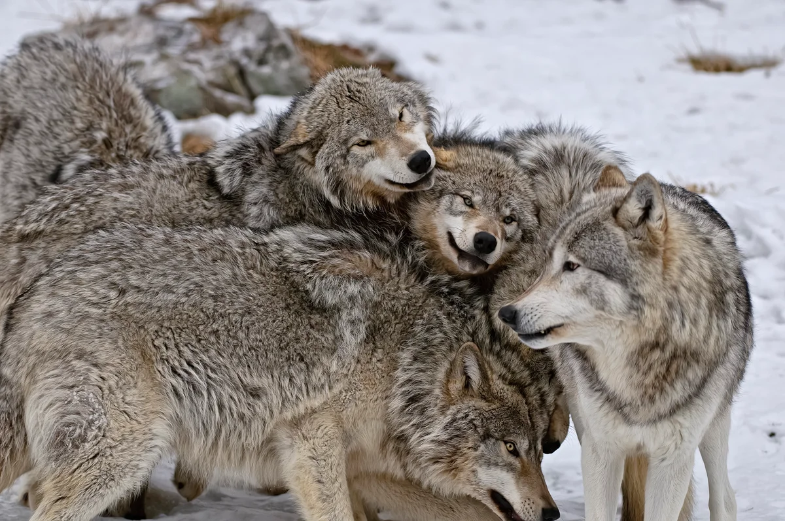
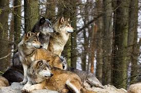

Information About Wolves
Gray wolves, or timber wolves, are canines with long bushy tails that are
often black-tipped. Their coat color is typically a mix of gray and brown with
buffy facial markings and undersides,but the color can vary from solid white to
brown or black. Gray wolves look somewhat like a large German shepherd. Wolves
vary in size depending on where they live. Wolves in the north are usually larger
than those in the south. The average size of a wolf's body is three to five feet
long and their tails are usually one to two feet long. Females typically weigh 60
to 100 pounds, and males weigh 70 to 145 pounds.
The historic range of the gray wolf covered over two-thirds of the United States.
Today gray wolves have populations in Alaska, northern Michigan, northern Wisconsin,
western Montana, northern Idaho, northeast Oregon, and the Yellowstone area of Wyoming.
Mexican wolves, a subspecies of the gray wolf, were reintroduced to protected parkland in
eastern Arizona and southwest New Mexico. Wolves can thrive in a diversity of habitats from
the tundra to woodlands, forests, grasslands and deserts.

Wolves are carnivores—they prefer to eat large hoofed mammals such as deer, elk, bison,
and moose. They also hunt smaller mammals such as beavers, rodents, and hares. Adults can eat
20 pounds of meat in a single meal.
Wolves communicate through body language, scent marking, barking, growling, and howling. Much of
their communication is about reinforcing the social hierarchy of the pack. When a wolf wants to
show that it is submissive to another wolf, it will crouch, whimper, tuck in its tail, lick the
other wolf's mouth, or roll over on its back.When a wolf wants to challenge another wolf, it will
growl or lay its ears back on its head. A playful wolf dances and bows. Barking is used as a warning,
and howling is for long-distance communication to pull a pack back together and to keep strangers away.

Wolves live in packs. Most packs have four to nine members, but the size can range from as few as two wolves to as many as 15. Occasionally a pack can increase to 30 members, until some individuals break off to find new territory and form their own pack.
Within the pack hierarchy, there are male and female hierarchies. The alpha male is dominant over the entire pack, both males and females. The alpha female and male are the only ones that breed.
When the young adults reach the age of three, they can either join the pack or leave to find their own territory. The new territory can be close by if there is a lot of prey. In some areas, young adults travel hundreds of miles to find a new territory.
Wolves typically mate for life. In the northern United States, they breed from late January through March. The breeding season is earlier for wolves living farther south. Wolves are pregnant for about 63 days and usually birth four to six pups.
The wolf pups are usually born in a den. At birth, they cannot see or hear and weigh about one pound. The pups are weaned at about six weeks. Adult pack members swallow meat and bring it back to the den for their pups. After the adults regurgitate the food,
the pups have a hearty meal. The mother wolf moves her pups to new den sites every couple of months until the fall, when the pack stops living at den sites. In the wild, wolves live 8 to 13 years, sometimes more. In captivity, they live upward of 15 years.

The gray wolf's story is one of the most compelling tales of American wildlife. Once, the wolf was widespread across most of North America, but it was hunted ruthlessly and extirpated over most of its range. Today the wolf is making a successful comeback in
some of its former habitat due to strong conservation efforts. The gray wolf plays a vital role in the health and proper functioning of ecosystems.